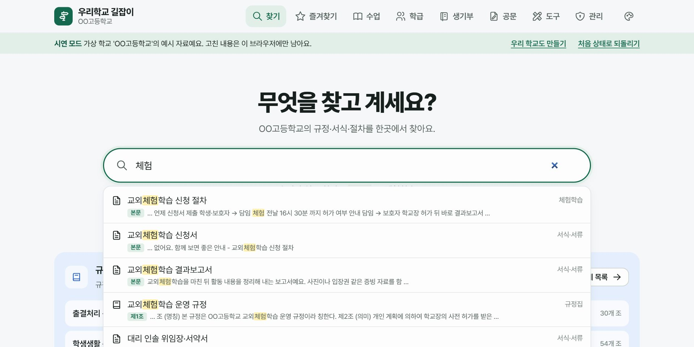
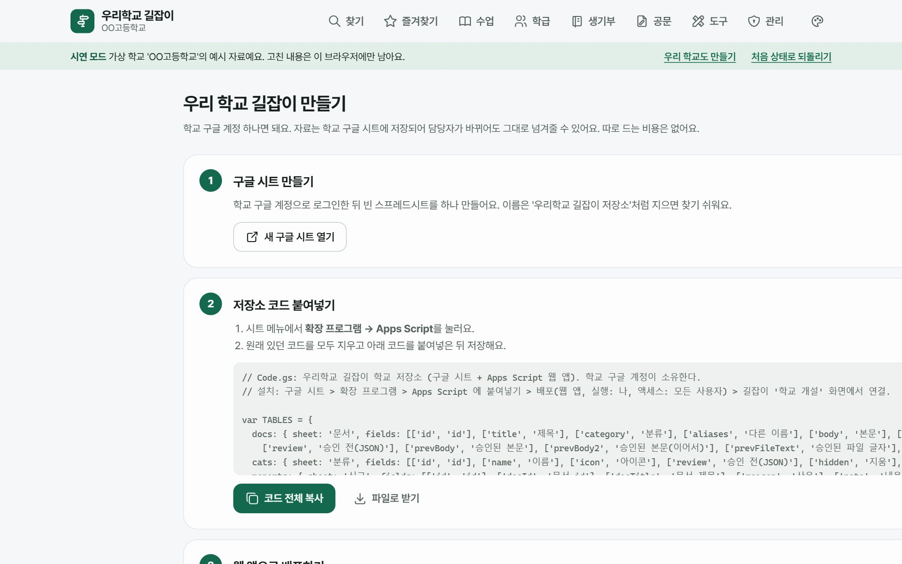
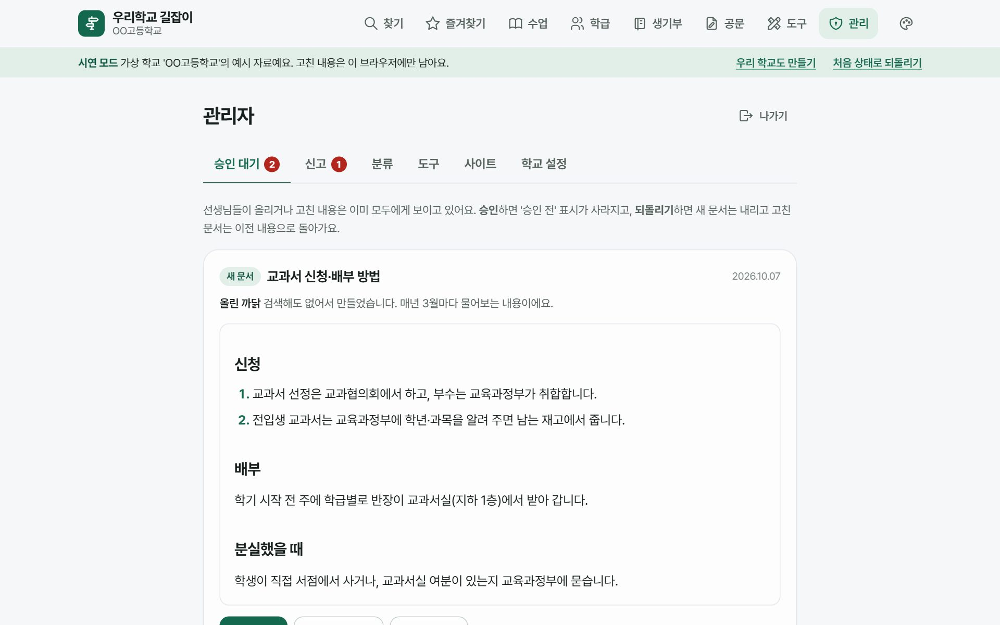
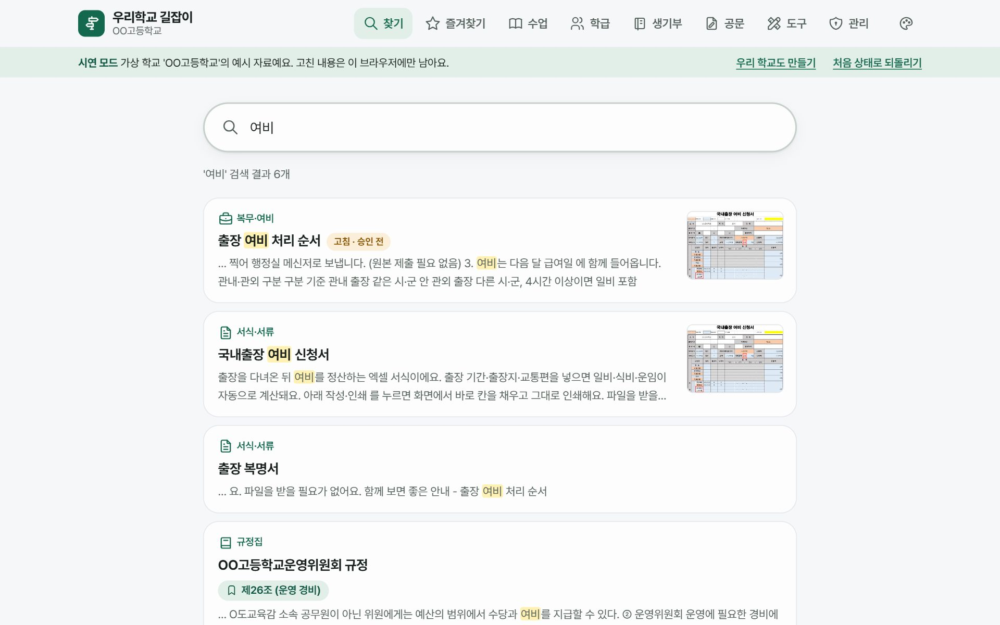
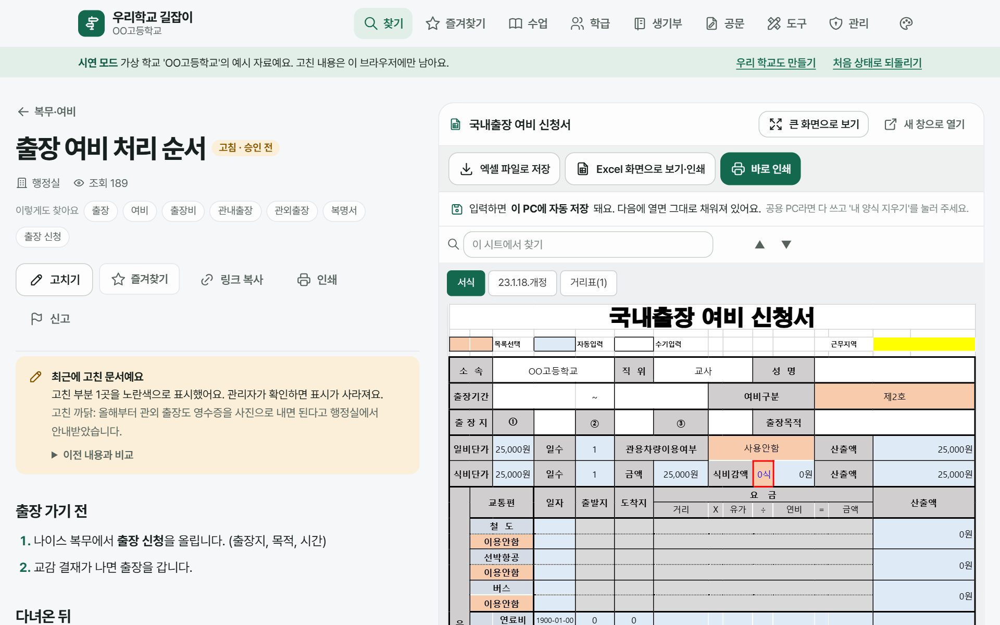
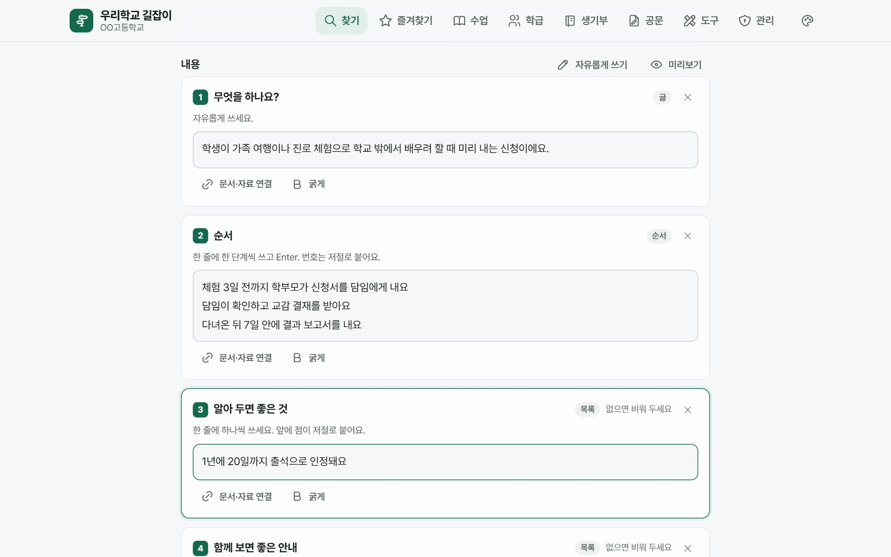
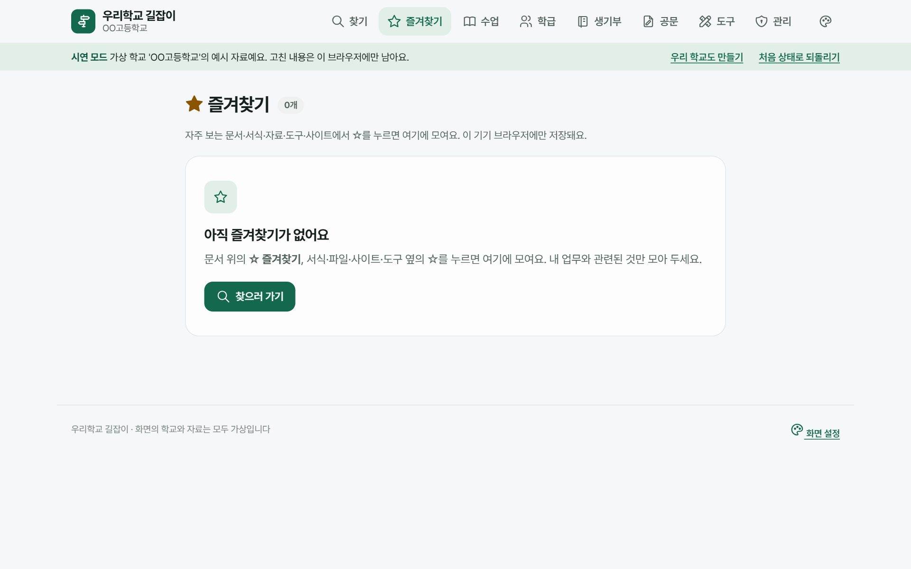
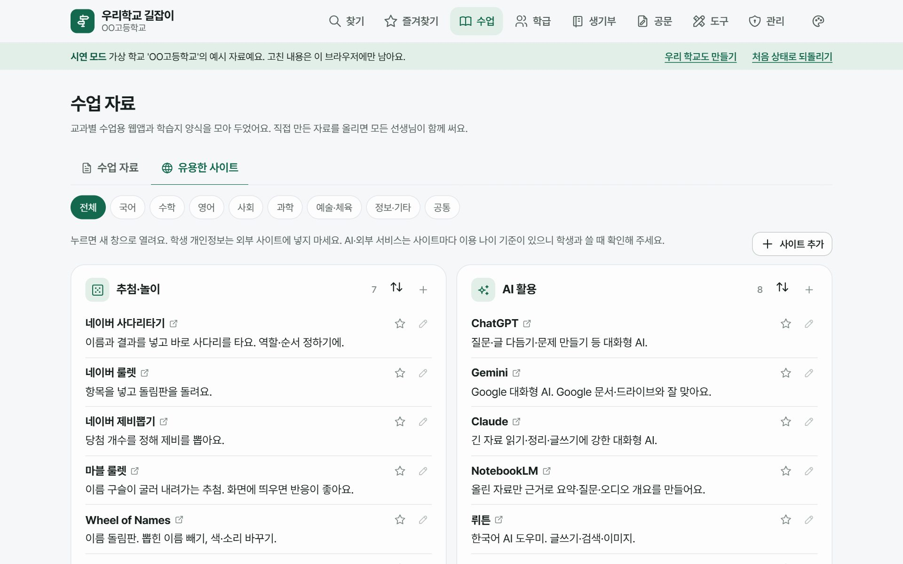
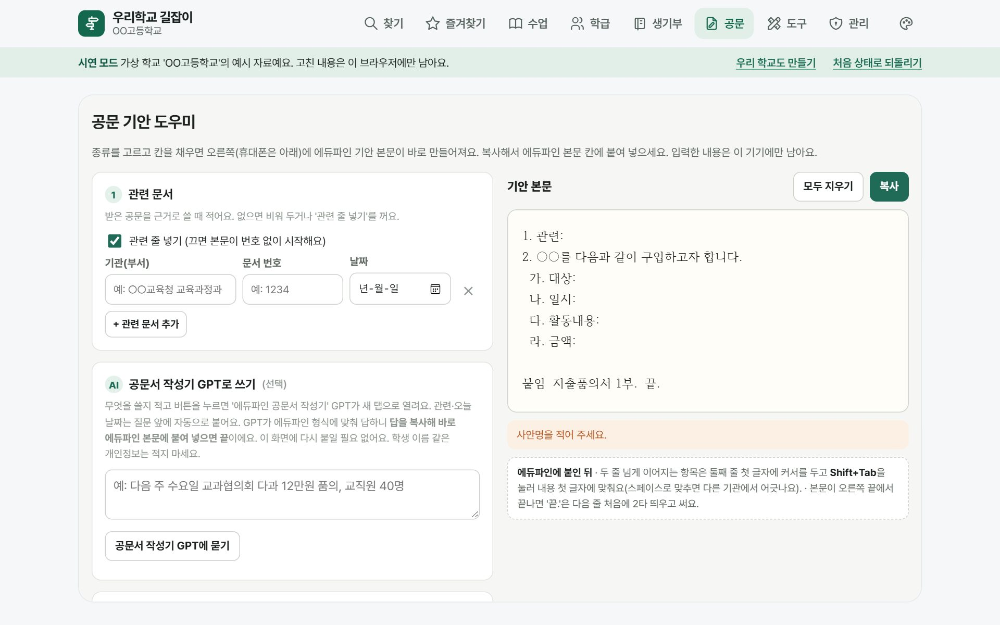

우리 학교만의 길잡이,
10분이면 열려요
"결석계 어디 있어요?", "출장비는 어떻게 올려요?" 해마다 반복되는 질문을, 선생님들이 함께 채우는 한 곳에서 찾아요. 우리 학교에만 있는 규정·서식·절차·도구를 모읍니다.
길잡이는 이런 곳이에요
왼쪽을 누르면 실제 화면이 바뀌어요. 화면을 누르면 크게 볼 수 있어요. (가상 학교 'OO고등학교' 예시)

낱말·초성(ㅊㅎ)·영어 자판 실수(cpgjagkrtmq)로도 찾고, 찾은 곳(본문·제N조·첨부 PDF n쪽)을 미리 보여 줘요.
어떤 방법으로 만들까요?
코딩을 몰라도 괜찮아요. 처음이라면 AI에게 맡기기를 추천해요. 문구를 붙여 넣으면 AI가 알아서 설치하고, 선생님은 로그인만 하면 돼요.
① 우리 학교 정보 넣기
② 쓰는 AI 고르기
- Claude Code 설치Claude 데스크톱 앱(claude.ai/download)을 설치하고 Code 탭을 열어요. 터미널을 쓰신다면 공식 설치 안내의 한 줄 명령으로도 돼요.
- 작업 폴더 고르기'문서' 폴더처럼 찾기 쉬운 곳을 골라요. 여기에 길잡이 폴더가 생겨요.
- 아래 문구를 붙여 넣고 Enter명령을 실행해도 되는지 물으면 내용을 보고 허용해 주세요.
- Codex 설치Codex 앱을 쓰거나, Node.js 가 있다면 터미널에서 npm install -g @openai/codex 뒤 codex 를 실행하고 ChatGPT 계정으로 로그인해요. (공식 안내)
- 작업 폴더에서 열기'문서' 폴더에서 Codex 를 열어요.
- 아래 문구를 붙여 넣고 Enter명령 실행 승인을 물으면 내용을 보고 허용해 주세요.
- Antigravity 설치antigravity.google/download 에서 내 컴퓨터용을 받아 설치하고 Google 계정으로 로그인해요.
- 폴더 열기Open Folder 로 '문서' 폴더를 열어요.
- 에이전트 창에 붙여 넣기에이전트가 세운 계획과 실행할 명령을 확인하고 진행(Accept)을 눌러 주세요.
③ 이 문구를 통째로 복사해 붙여 넣기
끝나면 AI 가 https://<영어 이름>.pages.dev 주소를 알려 줘요. 그다음은 처음 설정으로!
Node.js 설치하기
길잡이를 설치하는 데 쓰는 무료 프로그램이에요. nodejs.org 에서 LTS(권장) 를 받아 '다음'만 눌러 설치해요.
설치 확인: 시작 단추 → cmd 입력 → '명령 프롬프트'를 열고 아래를 붙여 넣어 Enter. v20 처럼 숫자가 나오면 성공!
설치 확인: ⌘+Space → 터미널 입력 → 아래를 붙여 넣어 Enter. v20 처럼 숫자가 나오면 성공!
node -v
막히면 여기
'node' 은(는) 내부 또는 외부 명령이 아닙니다 → 설치 뒤 명령 프롬프트(터미널)를 닫고 새로 열어 다시 해 보세요. 그래도 안 되면 컴퓨터를 다시 시작해요. 학교 PC 라 설치가 막혔다면 정보 담당 선생님께 'Node.js LTS 설치'를 부탁하세요.Cloudflare 무료 가입하기
dash.cloudflare.com/sign-up 에서 이메일로 가입하고, 받은 메일의 인증 링크를 눌러요. 결제 정보는 넣지 않아도 돼요. 학교 업무용이라면 학교 메일로 가입하고 담당자가 바뀔 때 넘겨주세요.
막히면 여기
인증 메일이 안 오면 스팸함을 확인해요. 가입 뒤 나오는 '도메인 추가' 같은 화면은 그냥 닫아도 돼요. 길잡이는 Cloudflare 가 주는 무료 주소(…pages.dev)를 써요.길잡이 내려받기
- 이 링크(ZIP 받기) 를 눌러 내려받아요.
- 받은 woori-gil-main.zip 을 '문서' 폴더로 옮기고 마우스 오른쪽 → 압축 풀기두 번 눌러 압축을 풀어요.
- woori-gil-main 폴더가 생기면 성공!
Git 을 쓸 줄 안다면
Git 으로 받으면 나중에 git pull 한 줄로 새 버전을 받을 수 있어요.git clone https://github.com/zkxmdydy106-ai/woori-gil.git
그 폴더에서 명령 창 열기
woori-gil-main 폴더 안으로 들어가서, 위쪽 주소창을 한 번 누르고 cmd 라고 쓴 뒤 Enter. 검은 창이 그 폴더에서 열려요.
Finder 에서 woori-gil-main 폴더를 control+클릭(오른쪽 클릭) → 폴더에서 새로운 터미널.
막히면 여기
열린 창의 맨 아래 줄 끝이 woori-gil-main> (Mac 은 woori-gil-main %) 로 끝나면 제자리예요. 아니라면 창을 닫고 다시 해요. 폴더 안에 또 woori-gil-main 폴더가 있다면 한 번 더 들어가요.설치 명령 한 줄
아래를 복사해 붙여 넣고 Enter. 그다음은 화면이 묻는 대로 하면 돼요.
node setup.mjs
- 학교 이름은? → 예: 한빛고등학교
- 사이트 영어 이름은? → 예: hanbit-gil (주소가 https://hanbit-gil.pages.dev 가 돼요)
- 브라우저가 열리면 Cloudflare 에 로그인하고 Allow
- 5~10분 기다리면 ✔ 다 됐어요! 와 주소가 나와요.
막히면 여기
사이트 이름을 쓸 수 없어요 → 다른 사람이 쓰는 이름이에요. 다른 영어 이름으로 다시 실행해요. npm install 이 실패 → 인터넷 연결 확인 뒤 다시. 학교 망에서 막히면 휴대폰 테더링으로 해 보세요. 로그인이 안 끝나요 → 창을 닫고 npx wrangler logout 뒤 다시 node setup.mjs. 중간에 멈췄다면 같은 명령을 다시 실행해도 괜찮아요(만든 것은 다시 만들지 않아요).주소를 열고 처음 설정
나온 주소를 브라우저로 열면 '처음 설정' 화면이 나와요. 아래 처음 설정을 보고 마무리해요. 🎉
새 구글 시트 + 코드 붙여 넣기
학교 구글 계정으로 새 시트를 만들고 확장 프로그램 → Apps Script 에 화면의 코드를 통째로 붙여 넣어 저장해요.
웹 앱으로 배포
배포 → 새 배포 → 웹 앱, 실행: 나, 액세스: 모든 사용자. 나온 웹 앱 URL 을 복사해요.
학교 정보 넣고 연결
웹 앱 URL·학교 이름·접속 코드·관리자 비밀번호를 넣으면 끝. 공유 주소와 QR 이 나와요.

주소를 열면 두 가지만 정해요
설치가 끝난 주소를 열면 '처음 설정' 화면이 나와요. 딱 한 번만 하면 돼요.
선생님들이 처음 들어올 때 넣는 코드예요(4자 이상). 교무회의에서 알려 주세요. 한 번 넣으면 그 기기에서는 다시 묻지 않아요.
8자 이상. 승인·신고 처리, 분류·도구 관리에 써요. 관리자(1~2명)만 알아야 해요.
결석계 제출, 출장 여비 처리 같은 예시 문서와 서식이 들어가요. 우리 학교에 맞게 고치거나 지우세요. 가상 학교 규정집은 넣지 않아요.
관리 → 학교 설정의 주소·QR 보기를 교무회의 화면에 띄우거나, 주소와 접속 코드를 메신저로 보내요. 휴대폰은 '홈 화면에 추가'하면 앱처럼 열린다고 알려 주세요. 처음 쓰는 분은 사이트 첫 화면의 사용 방법을 보면 돼요.
관리자는 '확인'만 해요
선생님들이 올리고 고친 내용은 바로 모두에게 보여요. 관리자는 메뉴 관리에서 비밀번호를 넣고 확인·되돌리기만 하면 돼요.

승인 대기·신고 확인. 이상한 것만 되돌리고 나머지는 승인.
규정 개정이 있었는지 확인하고, 옛 파일은 '바꾸기'로 새 판 올리기. 백업 한 번.
관리자 비밀번호·접속 코드 바꾸기, Cloudflare 계정 넘겨주기.
선생님들은 이렇게 써요
로그인 없이 바로 써요. 아래를 교무회의 자료로 그대로 보여 주셔도 좋아요.

'결석', '출장비'처럼 치면 문서·서식·도구가 함께. 초성·영어 자판 실수도 알아들어요.

문서 옆에 서식이 떠요. 쓰고 '바로 인쇄'. 입력은 그 PC 에만 저장돼요.

'고치기' → 칸에 쓰고 저장. 바로 반영되고 관리자가 나중에 확인해요.

내 업무 문서·서식의 ☆ 를 누르면 '즐겨찾기'와 첫 화면에 모여요.

학습지·웹앱을 올리고, 교과별 유용한 사이트를 누구나 추가해요.

공문 기안 도우미, 자리 바꾸기·모둠 뽑기 같은 학급 도구도 한곳에.
AI 에게 이렇게 부탁하세요
설치할 때 쓴 AI(Claude Code·Codex·Antigravity)를 설치한 그 컴퓨터에서 열고, 아래 문구를 복사해 붙여 넣으면 돼요. 업데이트해도 선생님들이 올린 문서·파일은 그대로예요.
새 버전으로 업데이트
새 기능이 나왔을 때 · 몇 달에 한 번'문서' 폴더에 있는 우리 학교 길잡이 폴더(woori-gil 또는 woori-gil-main)를 찾아서, 그 안의 AGENTS.md 안내대로 길잡이를 새 버전으로 업데이트해 줘. - 선생님들이 올린 문서와 파일은 그대로 두어야 해. - ZIP 으로 받은 폴더라면 새 버전을 받은 뒤 gil.config.json 과 cloudflare/wrangler.toml 을 옮겨서 해 줘. - 끝나면 사이트 주소와 무엇이 바뀌었는지 쉬운 말로 알려 줘.
자료 백업
학기마다 한 번 추천'문서' 폴더에 있는 우리 학교 길잡이 폴더에서 AGENTS.md 안내대로 길잡이 자료를 백업해 줘. - 백업 파일이 어느 폴더에 무슨 이름으로 저장됐는지 알려 줘. - 그 파일을 학교 공유 드라이브에도 올려 두면 좋은지 알려 줘.
관리자 화면의 학교 설정 → 자료 내보내기로도 직접 받을 수 있어요.
오늘의 급식·학사일정 넣기
선택 · 나이스 인증키 필요우리 학교 길잡이 첫 화면에 오늘의 급식과 학사일정을 넣고 싶어. AGENTS.md 안내대로 도와줘. - 우리 학교의 시도교육청 코드와 학교 행정표준코드를 찾는 방법을 알려 줘. - 나이스 인증키는 채팅으로 보내지 않을게. 내가 직접 넣어야 하는 단계가 오면 무엇을 어디에 붙여 넣으면 되는지 차례대로 알려 줘.
인증키는 나이스 교육정보 개방 포털에서 무료로 받아요. 키는 AI 에게 보내지 말고 화면 안내에 따라 직접 붙여 넣어요.
사이트가 이상할 때
안 열리거나 오류가 날 때우리 학교 길잡이 사이트가 이상해: (여기에 어떤 문제인지 적기, 예: 주소가 안 열려요) '문서' 폴더의 길잡이 폴더와 AGENTS.md 를 보고 원인을 찾아 줘. - 학교 자료가 지워지거나 바뀌는 일은 하기 전에 꼭 나에게 먼저 물어봐 줘. - 무엇이 문제였고 어떻게 고쳤는지 쉬운 말로 알려 줘.
AI 없이 직접 하고 싶다면 (명령어)
꼭 알아 둘 것
길잡이는 '학교 업무 자료'를 위한 곳이에요. 학생·교직원 개인정보를 모으는 곳이 아니에요.
학생·교직원 이름, 연락처, 성적·출결·상담 내용, 주민등록번호는 문서·파일 어디에도 넣지 않아요. 주민등록번호로 보이는 글은 저장이 막히고, 연락처 등은 경고해요.
엑셀 화면 보기·미리보기를 위해 파일마다 추측할 수 없는 긴 주소가 있어요. 그 주소가 밖으로 퍼지지 않게 하고, 외부에 공개되면 안 되는 파일은 올리지 마세요.
접속 코드는 선생님 모두, 관리자 비밀번호는 관리자만. 틀린 시도가 많으면 10분 동안 막혀요. 담당자가 바뀌면 관리자 → 학교 설정에서 바꿔요.
계정에 2단계 인증(Authenticator 앱)을 켜 두세요. 계정은 개인보다 학교 메일로 만들고, 인수인계 문서에 남겨 두세요.
나이스 인증키는 Cloudflare 비밀 설정으로만 들어가요. AI 도구에도 채팅으로 알려 주지 마세요. 설치 폴더의 설정 파일(gil.config.json 등)은 공개 저장소에 올리지 않아요.
학급 도구(자리 바꾸기 등)는 학생 이름을 그 기기 브라우저 안에서만 써요. 학생 정보를 서버로 보내는 웹앱은 '도구'에 올리지 마세요.
고친 부분은 노란색으로 보이고 관리자가 이전 내용으로 되돌릴 수 있어요. 문제 있는 글은 '신고'를 누르면 관리자에게 가요.
문서·파일은 그 학교의 Cloudflare 계정(또는 학교 구글 시트)에만 저장돼요. 만든 사람이나 다른 학교는 볼 수 없어요. 정기적으로 백업하세요.
| 무엇이 | 어디에 저장되나요 | 누가 볼 수 있나요 |
|---|---|---|
| 문서·분류·도구·사이트 목록 | 학교 Cloudflare D1 (구글 시트 방식은 학교 시트) | 접속 코드를 아는 선생님 |
| 올린 파일 (한글·PDF·엑셀·이미지·웹앱) | 학교 Cloudflare KV | 선생님 + 파일 주소를 아는 사람 |
| 서식에 입력한 내용, 즐겨찾기 | 그 선생님의 PC 브라우저 | 그 PC 를 쓰는 사람 (공용 PC 는 '내 양식 지우기') |
| 학급 도구의 학생 이름 | 그 기기 브라우저 | 그 기기를 쓰는 사람만 |
| 관리자 비밀번호 | 되돌릴 수 없는 형태(해시)로만 저장 | 아무도 원래 비밀번호를 볼 수 없음 |
| 나이스 인증키 | Cloudflare 비밀 설정 | 화면·파일에서 볼 수 없음 |